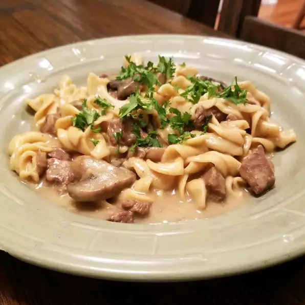

Beef Stroganoff

Description
Instant Pot beef stroganoff is truly a one-pot meal! Fork-tender beef and mushrooms are cooked right with the egg noodles. This recipe is written for the Instant Pot.
Ingredients
- 1/2 tablespoon canola oil
- .13 onion, diced
- 1/2 teaspoon salt, divided
- 1/2 pounds beef stew meat, cut into 1-inch cubes
- 1/4 teaspoon freshly ground black pepper
- 3/4 cloves garlic, minced
- 1/8 teaspoon dried thyme
- 1/2 tablespoon soy sauce
- 3/4 cup chopped mushrooms
- 1/2 tablespoon all-purpose flour
- 3/4 cup chicken broth
- 16 ounce package wide egg noodles
- 3 tablespoons sour cream, or to taste
Steps
- Turn on a multi-functional pressure cooker (such as an Instant Pot) and select Sauté function. Heat oil for 1 minute.
- Add onion and 1/2 teaspoon salt to pot; cook and stir until onion begins to soften, 3 to 4 minutes.
- Sprinkle beef with 1 teaspoon salt and the pepper. Add to the pot. Cook and stir until beef is evenly browned, about 2 minutes.
- Add garlic and thyme; cook until fragrant, about 30 seconds.
- Pour in soy sauce. Stir mushrooms into the pot. Stir in flour until incorporated. Stir in chicken broth and remaining 1/2 teaspoon salt.
- Close and lock the lid. Set to high pressure according to manufacturer's instructions for 10 minutes. Allow 10 to 15 minutes for pressure to build.
- Release pressure carefully using the quick-release method.
- Open pot; stir in egg noodles. Close and lock the lid. Set to high pressure according to manufacturer's instructions for 5 minutes.
- Release pressure naturally for 5 minutes according to manufacturer's instruction. Release remaining pressure using the quick-release method.
- Open pressure cooker; stir in sour cream.
Return to Home Page